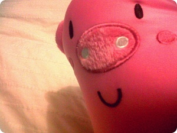

이사짐 정리가 끝나니까 스물스물 올라오는 포스팅^^;;;
아직 식량이라던가식량이라던가식량을 쟁여와야하는데
무거운거 드는게 세상에서 젤 싫어요;ㅂ;
게다가 요며칠 답지않게 박스나르고 30키로가넘는 캐리끌고
왔다갔다 했더니 으;;;;;;; 당분간 '무거운거옮기기'가
절대하기싫은 일 1순위를 차지할거같습니다;; OTL
그래도 오늘 센터나가서 마유코언니도 보고
고추장도 사왔음 훗훗훗훗
고추장은 소중합니다 +_+
고추장이랑 쌀만있음 그럭저럭 살수있어요~(←;;;;)

짐 다옮겼다고 좋아했더니 C군네 두고온 내 목쿠션 OTL
저렇게 사진찍어놓으니까 무진장 귀엽네요^^
가족들이 보고서 저게뭐냐고 다 한마디씩 했다고 ㅋㅋㅋㅋ

핸드폰 뒤지다 발견한 사진
요녀석이 내여행가방 박박 긁어놓은 펌프킨
귀여우니까 봐준다//ㅂ// 헐헐헐~
깜장고양이 넘 좋아요//////
오늘이 10월10일 이라는게 안믿겨지는 1人 입니다 ;ㅂ;